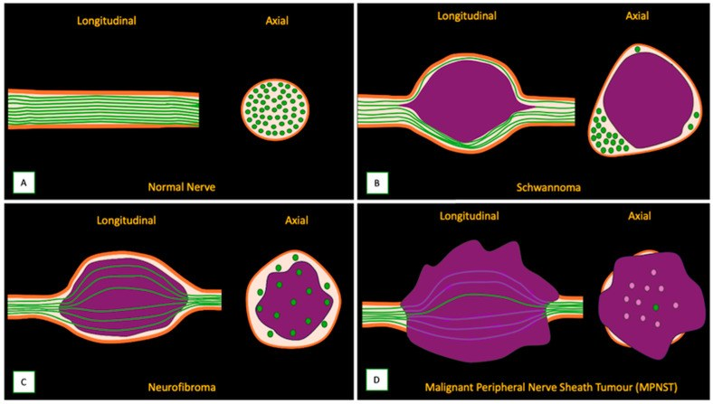
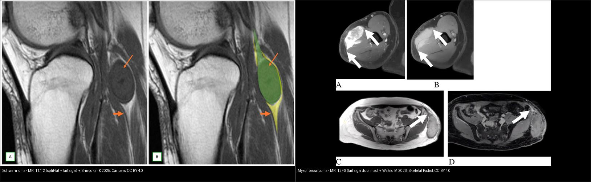
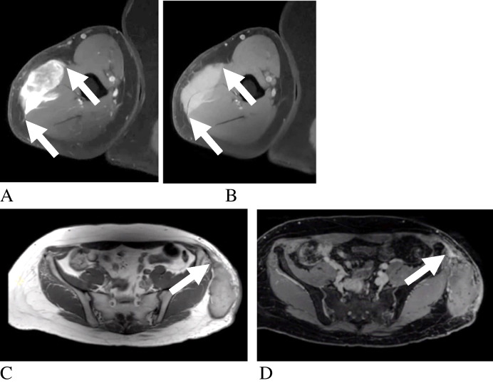
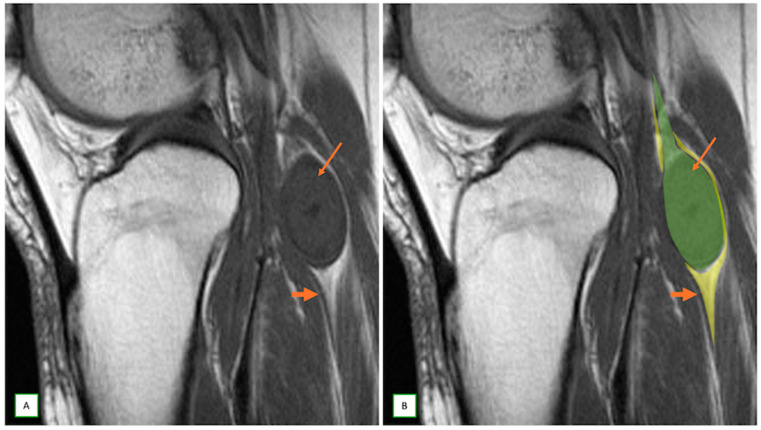
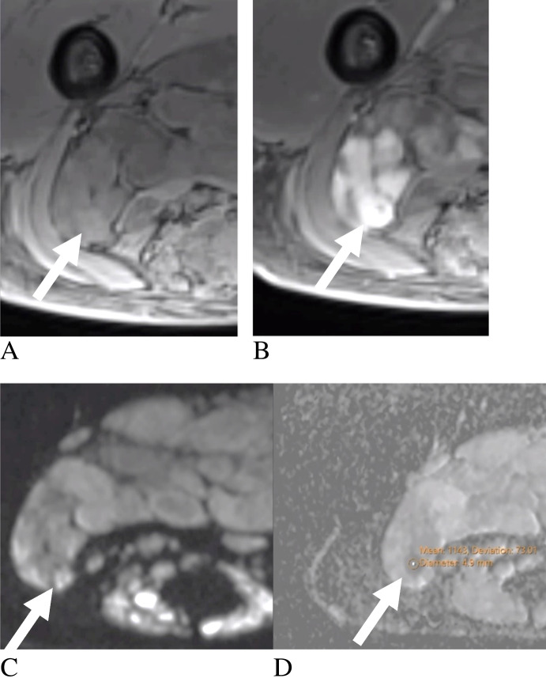

376 — U phần mềm KHÔNG mỡ: schwannoma vs sarcoma myxoid / u bao hoạt dịch / Non-fat soft-tissue masses
Tags: pattern:u-phan-mem pattern:u-than-kinh-ngoai-vi vung:mo-mem score:ADC protocol:MRI-mo-mem
Mức chắc chắn (certainty): tổng hợp y văn (literature synthesis) — tổng hợp từ 1 bài tổng quan u trong dây thần kinh + 1 systematic review MRI lành/ác mô mềm + 1 pictorial review u bao dây thần kinh, tất cả CC BY.
1. Tổng quan bệnh học – cơ chế hình ảnh
1.1 Bước 0 luôn phải làm: có mỡ đại thể không?
- Khối mô mềm (soft-tissue mass): câu hỏi đầu tiên trên MRI là "có mỡ đại thể không?" — dùng T1W + T1W xóa mỡ (fat-sat) / chemical shift. Có mỡ → nhóm u mỡ (lipoma, ALT/WDLPS, myxoid liposarcoma — xem bài 375). KHÔNG mỡ → nhóm bài này: u bao dây thần kinh ngoại vi (peripheral nerve sheath tumor — PNST), u myxoid (myxofibrosarcoma), sarcoma bao hoạt dịch (synovial sarcoma), sarcoma không biệt hóa, u mạch máu–cơ…
- TẠI SAO mọi khối "không mỡ" đều sáng T2: bất kỳ thành phần chứa nhiều nước tự do — chất nền nhầy (myxoid matrix), hoại tử, kén, phù — đều cho T2 rất sáng + T1 tối. Vì vậy "T2 sáng" không phân biệt lành/ác. Phải đọc thêm: bờ, phù quanh u, dấu hiệu liên quan dây thần kinh, và DWI/ADC (vùng đặc bào của sarcoma hạn chế khuếch tán).
- Schwannoma: u bao dây thần kinh lành, phát triển lệch trục (eccentric) đẩy sợi trục ra ngoại vi; cấu trúc Antoni A (đặc bào, sợi xơ) xen Antoni B (nhầy, thưa). Vật lý tín hiệu: vùng Antoni A nhiều sợi xơ → T2 tối trung tâm; vùng Antoni B giàu nước → T2 sáng ngoại vi → tạo dấu bia (target sign).
- Myxofibrosarcoma (u mô mềm người lớn hay gặp): đặc trưng là đuôi mạc (fascial "tail sign") — tín hiệu lan theo mạc/rãnh mô mềm, giải thích vì sao bờ "mờ" và nguy cơ tái phát cao.
- Synovial sarcoma: u mô mềm quanh khớp ở người trẻ, T2 rất sáng, bờ rõ giả vỏ, hay vôi hóa (~1/4); vùng đặc bào tăng độ ác → ADC thấp.
1.2 Ngưỡng định lượng (từ systematic review MRI lành/ác)
- PNST: ADC < 1,1 ×10⁻³ mm²/s gợi ác (MPNST) vs lành — Se 93% / Sp 95% (Wilson 2021, n = 798).
- PNST: phù cạnh u (perilesional edema) gợi ác — Se 60% / Sp 94% (Wilson 2021, n = 798). Sp cao → phù quanh u là "chốt loại lành" tốt hơn là chốt ác.
- MPNST: bờ không rõ (ill-defined) gặp 78,6% (22/28); PNST lành: bờ rõ gặp 84,2% (48/57) (Jin 2023).
- MPNST: tín hiệu T2 không đồng nhất gặp 81,0% (17/21) (Chhabra 2011); dấu đuôi (tail sign) ở MPNST chỉ 28,6% (6/21) → dấu đuôi thiên về PNST lành.
- Myxofibrosarcoma: dấu đuôi mạc gặp 82,4% (14/17) (Eleti 2022).
- Lipoma: vách < 2 mm (100%) — dùng để tách với ALT/WDLPS có vách dày/nốt.
- Synovial sarcoma: T2W sáng 100% (15/15); ADC thấp tương quan độ mô học cao 100% (15/15) (Ashikyan 2021).
2. Mẫu hình + chẩn đoán phân biệt theo vị trí (gamut)
Sau khi loại mỡ, hỏi tiếp theo thứ tự: (a) Khối có liên quan dây thần kinh không? → có dấu đuôi (tail sign), dấu tách mỡ (split-fat sign), dấu bia (target sign), dấu bó (fascicular sign) → PNST. (b) Có "đuôi" lan theo mạc/rãnh? → myxofibrosarcoma. (c) Vị trí & tuổi: quanh khớp, người trẻ, có vôi hóa → synovial sarcoma; sâu, lớn, không đồng nhất → UPS/CIC-rearranged sarcoma; dưới da nhỏ, đau → u mạch (angioleiomyoma "reticular sign", glomus T2 rất sáng + ngấm mạnh).
- Theo vị trí – quan hệ với dây thần kinh:
- Trong/nằm dọc dây thần kinh → PNST (schwannoma, neurofibroma, perineurioma) hoặc MPNST (ác, hay ở NF1).
- Quanh khớp → synovial sarcoma, u bao hoạt dịch.
- Mạc/nông → myxofibrosarcoma (đuôi mạc), viêm cân nhịp (nodular fasciitis).
- Cơ sâu, lớn → UPS, sarcoma có đảo CIC.

Sơ đồ: (A) dây thần kinh bình thường; (B) schwannoma mọc lệch trục đẩy sợi trục ra ngoại vi; (C) neurofibroma xòe các bó sợi quanh u; (D) MPNST phá hủy cấu trúc bó. Nguồn: Shirodkar K et al., Cancers 2025 (PMC11763772), CC BY 4.0.3. Bảng so sánh phân biệt (ma trận đối chiếu)
| Thực thể (entity) | Hình ảnh điển hình (T1/T2/ADC) | Chốt vào (rule-in) | Chốt loại (rule-out) | Gợi ý xác nhận |
|---|---|---|---|---|
| Schwannoma (lành) | T1 tối, T2 sáng; dấu bia (lõi T2 tối + viền sáng), dấu tách mỡ, dấu bó, dấu đuôi; ngấm đồng nhất–không đồng nhất | Dấu tách mỡ + dấu đuôi + bờ rõ + không phù quanh u | Phù quanh u + ADC < 1,1 → nghi MPNST | MRN/DTI men theo dây; theo dõi nếu không triệu chứng |
| Neurofibroma / plexiform | T2 sáng, dấu bia rõ; hình "dây lớn"; thường liên quan NF1 | Dấu bia + tổn thương đa dây/plexiform + NF1 | Chuyển dạng ác khi đau tăng nhanh, lớn nhanh, ADC thấp | PET/ADC tầm soát chuyển dạng; MRI toàn thân |
| MPNST (ác) | Không đồng nhất T2 (81%), hoại tử/xuất huyết, bờ không rõ (79%), phù quanh u (Sp 94%), ADC thấp < 1,1 | ADC < 1,1 + phù quanh u + bờ không rõ + lớn nhanh | Nếu ADC cao, bờ rõ, không phù → thiên lành | Sinh thiết hướng vùng ngấm/ADC thấp; PET-CT |
| Myxofibrosarcoma | T2 rất sáng (nhầy), đuôi mạc (82%) lan theo rãnh; ngấm muộn không đồng nhất | Đuôi mạc (fascial tail) + bờ mờ + nhầy sáng T2 | Không đuôi + bờ rõ → ít nghĩ | MRI + tiêm cản quang (đuôi ngấm muộn), rộng biên phẫu thuật |
| Synovial sarcoma | Quanh khớp, T2 sáng (100%), vôi hóa ~1/4, bờ "vỏ giả", ADC thấp ↔ độ ác cao | Quanh khớp + vôi hóa + ADC thấp ở người trẻ | ADC cao toàn bộ + không vôi hóa → ít nghĩ | Sinh thiết; X-quang/CT tìm vôi hóa |
| U mạch (angioleiomyoma / glomus) | Angioleiomyoma: dấu lưới T2 (reticular sign); Glomus: T2 rất sáng + ngấm mạnh, bờ rõ | Dấu lưới / T2 cực sáng + ngấm mạnh + bờ rõ | Bờ mờ + phù quanh + ADC thấp → loại | Siêu âm Doppler + MRI |
| Myxoid liposarcoma (có mỡ) | T1 có mỡ thưa, T2 sáng; nốt đặc | Có mỡ + nốt đặc/ vách dày | Không mỡ → không phải nhóm này (bài 375) | T1 fat-sat + sinh thiết |

*Trái: schwannoma — sagittal T1: dấu tách mỡ (split-fat, mũi tên mảnh) và dấu đuôi (tail sign, mũi tên — dây thần kinh vào/ra u); ảnh bên phải là overlay minh họa. Phải: myxofibrosarcoma — T2FS/post-contrast: đuôi mạc (fascial tail sign) lan theo mạc (mũi tên). Nguồn: Shirodkar K 2025, Cancers (PMC11763772) + Wahid M 2026, Skeletal Radiol (PMC13139302) — CC BY 4.0. Ảnh ghép letterbox.*Dấu "chốt" cần thuộc lòng
- Tail sign (dây thần kinh vào/ra u) — đặc trưng PNST, nhưng vẫn có ở ~29% MPNST → không dùng một mình để loại ác.
- Target sign (lõi T2 tối + viền T2 sáng) — schwannoma/neurofibroma.
- Fascial tail (đuôi mạc) — myxofibrosarcoma.
- ADC < 1,1 ×10⁻³ mm²/s — hướng MPNST (Se 93%/Sp 95%).
- Phù quanh u — Sp 94% cho ác (chốt loại lành mạnh).
4. Protocol chụp + lưu đồ
- MRI mô mềm chuẩn: T1W, T2W xóa mỡ (fat-sat)/STIR, DWI + bản đồ ADC, T1W fat-sat sau tiêm cản quang. Nếu u liên quan dây thần kinh: thêm MR neurography (MRN) + DTI để vẽ đường đi sợi trục phục vụ phẫu thuật.
- Nhắm sinh thiết: lấy vùng ngấm mạnh / ADC thấp / không hoại tử, tránh lõi hoại tử và vùng phù quanh u. U nghi sarcoma → chuyển trung tâm sarcoma, không sinh thiết bừa qua nhiều khoang.
- Không có RADS riêng cho u mô mềm; dùng bộ dấu hiệu + ADC + hội chẩn đa chuyên khoa (theo WHO 2020).
- CT/X-quang: tìm vôi hóa (synovial sarcoma), đánh giá xương kế cận.
flowchart TD
A[Khối mô mềm - T1/T2/ADC] --> B{Có mỡ đại thể?}
B -->|Có| C[Nhóm u mỡ - xem bài 375]
B -->|Không| D{Có dấu dây thần kinh? tail/split-fat/target/fascicular}
D -->|Có| E{ADC < 1,1 hoặc phù quanh u hoặc bờ không rõ?}
E -->|Không| F[PNST lành - schwannoma/neurofibroma]
E -->|Có| G[Nghi MPNST - sinh thiết/PET]
D -->|Không| H{Có đuôi mạc lan theo rãnh?}
H -->|Có| I[Myxofibrosarcoma]
H -->|Không| J{Quanh khớp + vôi hóa + người trẻ?}
J -->|Có| K[Synovial sarcoma]
J -->|Không| L[UPS/CIC sarcoma, u mạch, khác - sinh thiết]
5. Biến thể bình thường và cạm bẫy
- U bao dây thần kinh myxoid lành cho T2 cực sáng — dễ nhầm myxoma/myxoid sarcoma nếu chỉ nhìn "T2 sáng + nhầy". Không có dấu tách mỡ/đuôi + không hạn chế khuếch tán → thiên lành.
- Schwannoma thoái hóa kén: nhiều vách + mức dịch–dịch (fluid-fluid level) + ngấm không đồng nhất → giả ác; đối chiếu bờ rõ + dấu tách mỡ giúp trấn an.
- Nang hạch trong dây thần kinh (intraneural ganglion cyst): T1 tối/T2 sáng như khối đặc — nhưng không ngấm cản quang → phân biệt với u đặc.
- T2 shine-through vs hạn chế khuếch tán thật: luôn đọc bản đồ ADC, không kết luận ác chỉ vì DWI sáng (dịch/u nhầy cũng sáng DWI).
- Đuôi mạc cũng gặp trong viêm cân/nodular fasciitis và MPNST → đọc trong bối cảnh.
- Phù cơ do mất chi phối (denervation edema) có thể trông như "khối" ngấm thuốc; tìm dấu hiệu thần kinh nguồn (khối dọc dây) mới đúng tổn thương nguyên phát.

*Hai bệnh nhân myxofibrosarcoma: khối mô mềm không đồng nhất có phần lan theo mạc (đuôi mạc — mũi tên); cần đánh dấu phần đuôi khi lập kế hoạch mổ vì đây là nguồn tái phát. Nguồn: Wahid M et al., Skeletal Radiol 2026 (PMC13139302), CC BY 4.0.*6. Tự lượng giá — Blind Quiz
Ca 1 — Người 48 tuổi, khối khoeo chân. Nhìn ảnh trước.

- Câu hỏi: Hai dấu hiệu chốt trên lát T1 là gì? Nghĩ nhóm u nào? Cần đo gì thêm để loại trừ ác tính?
Bấm để hiện đáp án
- Dấu hiệu (findings): dấu tách mỡ (split-fat sign — mũi tên mảnh) — lớp mỡ còn bao quanh u; dấu đuôi (tail sign — mũi tên) — dây thần kinh chui vào và ra khỏi u. U bờ rõ, tín hiệu đồng nhất.
- Chẩn đoán (diagnosis): u bao dây thần kinh lành (schwannoma) — vì tách mỡ + đuôi + bờ rõ là bộ dấu hiệu đặc trưng PNST lành. Cần ADC (loại MPNST nếu ≥ 1,1) và tìm phù quanh u.
- Nguồn ảnh: Shirodkar K et al., Cancers 2025 (PMC11763772), CC BY 4.0 — Fig 3.
Ca 2 — Khối mô mềm ở đùi, T2 rất sáng. Nhìn ảnh trước.
Bấm để hiện đáp án
- Dấu hiệu (findings): khối không đồng nhất, phần mô lan theo mạc/rãnh mô mềm (đuôi mạc — mũi tên); đuôi ngấm thuốc muộn.
- Chẩn đoán (diagnosis): myxofibrosarcoma — vì dấu đuôi mạc gặp ~82% ở myxofibrosarcoma và phản ánh sự lan theo mạc (nguyên nhân tái phát nếu bỏ sót phần đuôi). Phải đánh dấu toàn bộ phần đuôi trước mổ.
- Nguồn ảnh: Wahid M et al., Skeletal Radiol 2026 (PMC13139302), CC BY 4.0 — Fig 5.
Ca 3 — Ảnh ghép: hai khối không mỡ. Nhìn ngoài, tự phân biệt.
- Câu hỏi: Bên nào là u lành? Dấu hiệu nào giúp chốt? Cần bổ sung chuỗi xung nào?
Bấm để hiện đáp án — findings + chẩn đoán
- Trái = schwannoma lành: có dấu tách mỡ + dấu đuôi (dây thần kinh vào/ra u), bờ rõ.
- Phải = myxofibrosarcoma: đuôi mạc lan theo rãnh, bờ mờ, không có quan hệ dây thần kinh.
- Cần bổ sung: DWI/ADC (hạn chế khuếch tán ở sarcoma đặc bào) + T1 fat-sat sau tiêm để đánh giá đuôi ngấm muộn.
- Nguồn ảnh: ghép từ Shirodkar K 2025 (PMC11763772) + Wahid M 2026 (PMC13139302), CC BY 4.0;
tools/make_composite.py.
Ca 4 — U dọc dây thần kinh, không đồng nhất, lớn nhanh ở bệnh nhân NF1. Nhìn ảnh trước.

Bấm để hiện đáp án
- Dấu hiệu (findings): tổn thương plexiform ở mông; DWI (C) hạn chế khuếch tán khu trú + bản đồ ADC (D) ADC = 1,1 ×10⁻³ mm²/s (mũi tên).
- Chẩn đoán (diagnosis): MPNST (u bao dây thần kinh ác tính) — vì ADC < 1,1 ×10⁻³ mm²/s hướng ác (Se 93%/Sp 95%), cộng bờ không rõ + phù quanh u; sinh thiết hướng đúng vùng ADC thấp.
- Phản biện (critique): ADC 1,1 nằm ngay ngưỡng — không kết luận chỉ bằng một con số; phải phối hợp bờ, phù quanh u, tốc độ lớn và bối cảnh NF1.
- Nguồn ảnh: Wahid M et al., Skeletal Radiol 2026 (PMC13139302), CC BY 4.0 — Fig 7.
Bài liên quan chéo
- 300 – Tổng quan Cơ–Xương–Khớp
- 375 – U phần mềm (nhóm có mỡ: lipoma vs WDLPS)
- 332 – Sarcoma xương nguyên phát
- 331 – U ác người lớn: di căn/myeloma
- 213 – U não (nguyên lý DWI/ADC, ngấm thuốc)
Ảnh
- Ảnh tải về + giấy phép từng file:
images/CREDITS.md. Toàn bộ ảnh CC BY 4.0 (được phép ghép/điều chỉnh, ghi nguồn). - Ảnh ghép đối chiếu tạo bằng
tools/make_composite.py(letterbox nền đen, giữ aspect).
Không dùng để chẩn đoán độc lập khi chưa có người hướng dẫn.